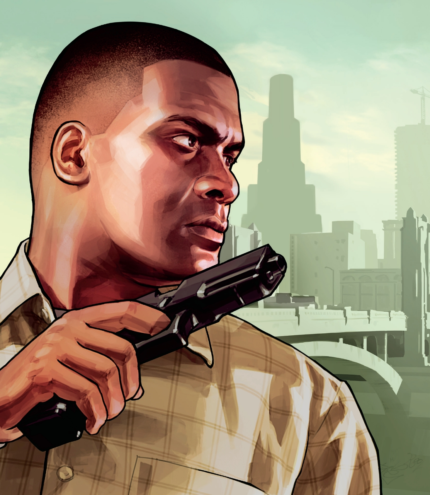
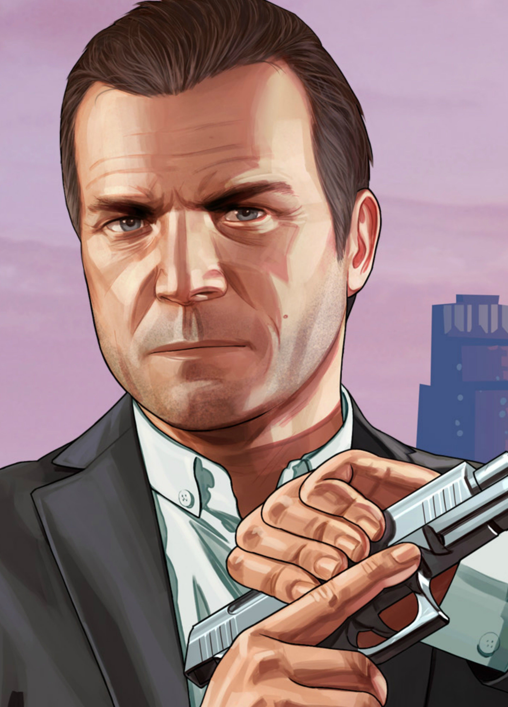
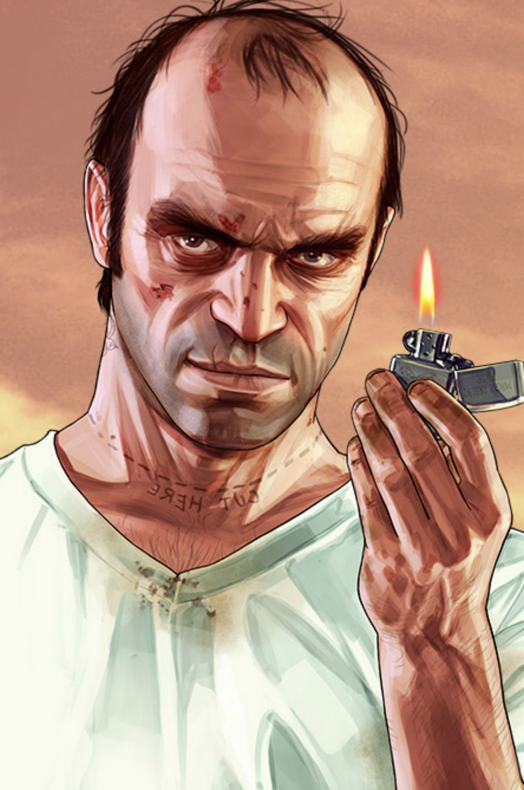

GTA V is a 2013 open-world RPG game. It was developed by Rockstar North and published by Rockstar Games. It is set in the fictional state of San Andeas, based on Southern California. The story mode is based on three characters, Franklin, Michael, and Trevor trying to commit crimes while under pressure from a government agency and powerful crime figures. The multiplayer mode lets players freely roam the San Andreas Country Side and the fictional city of Los Santos, based on Los Angeles. In the story mode, the player controls the three portagonists throughout single-player and switch among them, both during and outside missions.
  In the multiplayer mode, the player has to create a person, this person arrives at the city of Los Santos. The player can earn money by doing missions and heists, and a lot of other kind of activities. After that, the player can browse the virtual web in game to buy a lot of different properties, (apartments, hangers for planes, ceo offices, vehicle warehouses, arcades, nightclubs, facilities, bunkers, etc.) and other cool things.(cars, bikes, motorcycles, planes, boats, helicopters, weaponized vehicles, etc.)
This table shows the top 5 best selling games of all time, and GTA V is the third in the list.
| Games | copies |
|---|---|
| Minecraft | 180,000,000 |
| Tetris | 170,000,000 |
| Grand Theft Auto V | 120,000,000 |
| Wii Sports | 82,880,000 |
| PlayerUnknown's Battlegrounds | 50,000,000 |
Fun Fact: The "Diamand Casino & Resort" dlc that was release on July 23, 2019, gave Rockstar's flagship franchise its biggest number of players ever recorded!!!